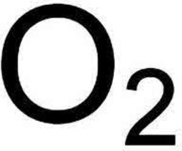

Trade Mark Journal No.2025/009 28 February 2025
UK00004146826 13 January 2025 (3,16,18,25,28,29,30,32,33,42,43,44)

- Class 3
- Non-medicated cosmetics and toiletry preparations; non-medicated dentifrices; perfumery, essential oils; bleaching preparations and other substances for laundry use; cleaning, polishing, scouring and abrasive preparations; soaps; perfumery, essential oils, cosmetics, hair lotions; dentifrices; abrasive cloth; abrasive paper; adhesives for affixing false eyelashes; adhesives for affixing false hair; adhesives for cosmetic purposes; alum stones [astringents]; antiperspirants [toiletries]; anti-perspirants [toiletries]; antistatic preparations for household purposes; anti-static preparations for household purposes; bath salts, not for medical purposes; breath freshening sprays; breath freshening strips; cobblers' wax; cotton sticks for cosmetic purposes; cotton wool for cosmetic purposes; decorative transfers for cosmetic purposes; dental bleaching gels; denture polishes; dry shampoos; drying agents for dishwashing machines; emery cloth; emery paper; eyelashes (adhesives for affixing false -); eyelashes (false -); false eyelashes; false hair (adhesives for affixing -); false nails; fumigation preparations [perfumes]; glass cloth; glass paper; incense; joss sticks; lacquer-removing preparations; leaves of plants (preparations to make shiny the -); linen (sachets for perfuming -); mouth washes, not for medical purposes; nail art stickers; nails (false -); non-slipping liquids for floors; non-slipping wax for floors; paint stripping preparations; pastes for razor strops; pets (shampoos for -); plants (preparations to make shiny the leaves of -); polishes (denture -); polishing paper; potpourris [fragrances]; pumice stone; sachets for perfuming linen; sandcloth; sandpaper; scented wood; shampoos; shampoos for pets; shaving stones [astringents]; shiny (preparations to make the leaves of plants -); shoemakers' wax; smoothing stones; sprays (breath freshening -); swabs [toiletries]; tailors' wax; toiletries; transfers (decorative -) for cosmetic purposes; tripoli stone for polishing; varnish-removing preparations; wax (cobblers' -); wax (tailors' -); cleaning fluids.
- Class 16
- Paper and cardboard; Printed matter; Bookbinding material; Photographs; Stationery and office requisites, except furniture; Adhesives for stationery or household purposes; Drawing materials and materials for artists; Paintbrushes; Instructional and teaching materials; Plastic sheets, films and bags for wrapping and packaging; Printers' type, printing blocks; adhesive tapes for stationery or household purposes; advertising signs of paper or cardboard; architects' models; bags (garbage-) of paper or of plastics; bags of paper; bathroom tissue; beer mats; biological samples for use in microscopy [teaching materials]; blackboards; bookends; books; boxes for pens; boxes of cardboard or paper; cabinets for stationery [office requisites]; calendars; cardboard tubes; cards; carrier bags; catalogues; chalk (marking-); coasters of cardboard; coasters of paper; composing frames [printing]; composing sticks; diaries; drawer liners of paper, perfumed or not; engraving plates; envelopes; face towels of paper; figurines [statuettes] of papier mache; flags of paper; gift bags; gift boxes; giftwrapping paper; greeting cards; hand labelling appliances; handkerchiefs of paper; hat boxes of cardboard; holders for checkbooks [cheque books]; holders for stamps [seals]; house painters' rollers; humidity control sheets of paper or plastic for foodstuff packaging; kitchen paper; magazines; models (architects'-); money clips; mounting photographs (apparatus for-); napkins of paper; napkins of paper for removing make-up; note pads; notebooks; packaging material made of starches; pads [stationery]; pamphlets; paper banners; paper clasps; paper knives; passport holders; pencils; pens; perforated cards for jacquard looms; placards of paper or cardboard; postage stamps; postcards; posters; printed programmes; printers' blankets, not of textile; printers' reglets; rollers (house painters'-); rosettes of paper; self-adhesive tapes for stationery or household purposes; sheets of reclaimed cellulose for wrapping; signboards (of paper or cardboard); stands for pens; steatite [tailor's chalk]; stickers; table linen of paper; tablecloths of paper; tailors' chalk; terrestrial globes; tickets; tissues; trays for sorting and counting money; typewriters; writing paper; paper guides for eye make-up; parts and fittings for all of the aforesaid goods.
- Class 18
- Animal skins and hides; Luggage and carrying bags; Umbrellas and parasols; Walking sticks; Whips, harness and saddlery; Collars, leashes and clothing for animals; all-purpose carrying bags; all-purpose leather straps; articles of luggage; Attaché cases; backpacks; bags (game-) [hunting accessories]; bags (net-) for shopping; bags; sports bags; bags for campers; bags for climbers; bags for sports; bags made of imitation leather; bags made of leather; bandoliers; bands of leather; beach bags; belts (leather shoulder -); boot bags; boxes made of leather; briefcases; canes; card cases [notecases]; card wallets [leatherware]; cases of imitation leather; cases, of leather or leatherboard; cattle skins; chain mesh purses; chamois leather, other than for cleaning purposes; clothing for pets; coverings (furniture -) of leather; credit card holders; curried skins; duffel bags; frames for umbrellas or parasols; fur; furniture coverings of leather; game bags [hunting accessories]; garment bags for travel; handbag frames; handbags; harness for animals; haversacks; holdalls; horse blankets; horseshoes; imitation leather; key cases; kid; labels of leather; leather bags; leather cases; leather cases for keys; leather coin purses; leather credit card wallets; leather handbags; leather laces; leather leads; leather luggage straps; leather pouches; leather shopping bags; leather shoulder straps; leather straps; leather suitcases; leather thongs; leather twist; leather wallets; leather, unworked or semi-worked; leatherboard; luggage tags [leatherware]; moleskin [imitation of leather]; music cases; muzzles; pocket wallets; purses; reins; ribs (umbrella or parasol-); rucksacks; saddlery; school bags; shopping bags; shoulder belts; suitcases; toiletry bags sold empty; trimmings of leather for furniture; trunks and travelling bags; umbrella covers; valises; vanity cases [not fitted]; walking stick seats; wallets (pocket-); wheeled shopping bags; parts and fittings for all the aforesaid goods.
- Class 25
- Clothing, footwear, headgear; aprons [clothing]; articles of clothing; articles of outer clothing; articles of underclothing; athletic clothing; Bandanas [neckerchiefs]; Bath robes; Bathing caps; bathing costumes; Beach shoes; beachwear; Belts (Money -) [clothing]; Belts [clothing]; Berets; Bibs, not of paper; blouses; Boas [necklets]; Bodices [lingerie]; body warmers; boiler suits; Boot uppers; Boots; Brassieres; Breeches for wear; Camisoles; caps; cardigans; casual clothing; casual footwear; clothing for babies; clothing for children; Clothing for gymnastics; clothing for infants; Clothing of imitations of leather; Clothing of leather; Coats; Collar protectors; Corsets [underclothing]; costumes; Cuffs; Cyclists' clothing; denim jackets; Detachable collars; Dress shields; Dresses; Dressing gowns; dungarees; Ear muffs [clothing]; exercise wear; Fishing vests; Fittings of metal for footwear; Football boots; Footmuffs, not electrically heated; formal wear; Frames (Hat -) [skeletons]; Fur stoles; Furs [clothing]; Gabardines [clothing]; Gaiters; Garters; Girdles; Gloves [clothing]; Goloshes; Gymnastic shoes; Hats; Headbands [clothing]; Headgear for wear; Heels; hooded sweatshirts; Hoods [clothing]; Hosiery; Inner soles; jackets; jeans; Jerseys [clothing]; jumpers; knitwear; Lace boots; ladies wear; Layettes [clothing]; Leg warmers; Leggings [trousers]; Linings (Ready-made -) [parts of clothing]; Liveries; Maniples; Mantillas; Masquerade costumes; men's clothing; Mittens; neckties; nightwear; Non-slipping devices for footwear; Overalls; Pants; pantyhose; Paper clothing; Parkas; Petticoats; Pinafore dresses; Pocket squares; Pockets for clothing; polo shirts; Ponchos; printed t-shirts; Pullovers; Pyjamas; rainproof clothing; Ready-made clothing; romper suits; Sandals; Saris; Sarongs; Sashes for wear; Scarves; Shawls; Shirt fronts; shirts; Shoes; shorts; Shoulder wraps; Shower caps; Singlets; Ski boots; Ski gloves; Skirts; Skorts; Skull caps; Sleep masks; sleepwear; Slippers; Slips [undergarments]; sneakers; Sock suspenders; Socks; Sports shoes; sportswear; Stocking suspenders; Stockings; Studs for football boots; Suits; Sun visors; Suspenders; sweat bottoms; sweat shirts; Sweat-absorbent underclothing [underwear]; Sweaters; Swimsuits; swimwear; Teddies [undergarments]; Tee-shirts; Tights; Top hats; Topcoats; tops; track suits; Trousers; t-shirts; Turbans; Underpants; Underwear; Uniforms; Veils [clothing]; vest tops; vests; Waistcoats; Waterproof clothing; wraps [clothing]; parts and fittings for all of the aforesaid goods.
- Class 28
- Games, toys and playthings; video game apparatus; gymnastic and sporting articles; decorations for Christmas trees; amusement machines; arcade video game machines; artificial fishing bait; artificial snow for Christmas trees; automatic and coin-operated games; bags especially designed for skis and surfboards; bait (artificial fishing -); billiard cue tips; billiard markers; billiard table cushions; bite indicators [fishing tackle]; bite sensors [fishing tackle]; bladders of balls for games; caps for pistols [toys]; chalk for billiard cues; Christmas tree stands; Christmas trees of synthetic material; confetti; coverings for skis (sole -); cricket bags; cue tips (billiard -); divot repair tools [golf accessories]; edges of skis; exercise bicycles (rollers for stationary -); fairground ride apparatus; fish hooks; floats for fishing; gaming machines for gambling; golf bags; golf bags, with or without wheels; gut for fishing; gut for rackets; guts for rackets; hooks (fish -); joysticks for video games; kite reels; lines for fishing; markers (billiard -); masts for sailboards; novelties for parties, dances [party favors, favours]; paintballs [ammunition for paintball guns]; paper party hats; caps for toy pistols; pitch mark repair tools [golf accessories]; protective paddings [parts of sports suits]; rackets (guts for -); rackets (strings for -); reels for fishing; rollers for stationary exercise bicycles; rosin used by athletes; sailboards (masts for -); seal skins [coverings for skis]; ski bindings; skis (edges of -); skis (sole coverings for -); skis and surfboards (bags especially designed for -); skis and surfboards (bags especially designed for -) surfboards (bags especially designed for skis and-); slot machines [gaming machines]; sole coverings for skis; strings for rackets; surfboard leashes; surfboards (bags especially designed for skis and -); tips (billiard cue -); tools (divot repair -) [golf accessories]; video game machines; theatre sets (toys); golf bag tags of leather; parts and fittings for all the aforesaid goods.
- Class 29
- Meat, fish, poultry and game; meat extracts; preserved, frozen, dried and cooked fruits and vegetables; jellies, jams, compotes; eggs; milk cheese, butter, yogurt and other milk products; edible oils and fats; albumen for culinary purposes; albumen for food; alginates for culinary purposes; alginates for food; almonds, ground; aloe vera prepared for human consumption; bouillon; bouillon (preparations for making -); bouillon concentrates; broth; broth concentrates; concentrates (bouillon -); concentrates (broth -); croquettes; vegetable extracts for culinary purposes; edible birds' nests; egg nog (non-alcoholic); fatty substances for the manufacture of edible fats; gelatine for food; gelatine; isinglass for food; laver (toasted -); lecithin for culinary purposes; mushrooms, preserved; nuts, prepared; peanuts, processed; fruit pectin for culinary purposes; pollen prepared as foodstuff; preparations for making bouillon; preparations for making soup; protein milk; rennet; salted nuts; salted meats; salted fish; seeds (processed -); seeds (processed sunflower -); silkworm chrysalis, for human consumption; soup (preparations for making -); soups; tahini [sesame seed paste]; toasted laver; truffles, preserved; weed extracts for food; cream.
- Class 30
- Coffee, tea, cocoa and artificial coffee; rice, pasta and noodles; tapioca and sago; flour and preparations made from cereals; bread, pastries and confectionery; chocolate; ice cream, sorbets and other edible ices; sugar, honey, treacle; yeast, baking-powder; salt, seasonings, spices, preserved herbs; vinegar, sauces and other condiments; ice (frozen water); mustard; spices; aromatic preparations for food; bee glue [propolis] for human consumption; bee glue; beverages (flavorings [flavourings], other than essential oils, for -); binding agents for edible ices; binding agents for ice cream; binding agents for ice cream [edible ices]; cakes (flavorings [flavourings], other than essential oils, for -); capers; cheeseburgers [sandwiches]; chewing gum; cream of tartar for cooking purposes; essences for foodstuffs, except etheric essences and essential oils; flavorings, other than essential oils; flavorings, other than essential oils, for beverages; flavorings, other than essential oils, for cakes; foodstuffs (essences for -), except etheric essences and essential oils; glucose for culinary purposes; glucose for food; gluten additives for culinary purposes; gluten for food; gluten prepared as foodstuff; ham glaze; ice cream (binding agents for -); ices (binding agents for edible -); ices (powder for edible -); infusions, not medicinal; jelly (royal-) for human consumption [not for medical purposes]; linseed for human consumption; malt extract for food; maltose; meat tenderizers, for household purposes; mint for confectionery; natural sweeteners; noodle-based prepared meals; powder for edible ices; powders for ice; powders for ice cream; preparations for stiffening whipped cream; propolis; propolis [bee glue] for human consumption; puddings; rice-based snack food; royal jelly; royal jelly for human consumption, not for medical purposes; sandwiches; sausage binding materials; sea water for cooking; snack food (rice-based -); spring rolls; starch for food; starch products for food; stiffening whipped cream (preparations for -); sushi; sweeteners (natural -); tabbouleh; thickening agents for cooking foodstuffs; water (sea -) for cooking; wheat germ for human consumption; whipped cream (preparations for stiffening -).
- Class 32
- Beers; non-alcoholic beverages; fruit beverages and fruit juices; syrups and other non-alcoholic preparations for making beverages; aerated fruit juices; alcohol-free beers; barley wine [beer]; beer; beer wort; beer-based beverages; beer-based cocktails; beverages consisting of a blend of fruit and vegetable juices; cider, non-alcoholic; cocktails, non-alcoholic; coffee-flavored beer; concentrated fruit juices; energy drinks; essences for making beverages; extracts of hops for making beer; flavoured beers; fruit drinks; ginger beer; isotonic beverages; low-alcohol beer; malt beer; non-alcoholic fruit extracts; non-alcoholic fruit juice beverages; preparations for making beverages; preparations for making liqueurs; sherbets [beverages]; soft drinks; sorbets [beverages]; syrups for beverages; syrups for lemonade; syrups for making soft drinks; tomato juice [beverage]; vegetable juices [beverages]; whey beverages.
- Class 33
- Alcoholic beverages, except beers; alcoholic preparations for making beverage; alcoholic beverages containing fruit; alcoholic bitters; alcoholic cordials; alcoholic energy drinks; alcoholic essences; alcoholic extracts; alcoholic fruit beverages; alcoholic punches; aperitifs; baijiu [Chinese distilled alcoholic beverage]; bitters; brandy; cider; cocktails; distilled beverages; flavored tonic liquors; fruit extracts [alcoholic]; gin; liqueurs; low alcoholic drinks; nira [sugarcane-based alcoholic beverage]; pre-mixed alcoholic beverages, other than beer-based; rum; rum-based beverages; spirits [beverages]; vodka; whisky; wine; wine-based drinks. .
- Class 42
- Scientific and technological services and research and design relating thereto; industrial analysis and research services; design and development of computer hardware and software; calibration [measuring]; cloud seeding; computer programming; computer rental; computer software consultancy; computer software design; updating of computer software; computer system analysis; computer system design; construction drafting; consultancy in the design and development of computer hardware; consultancy in the field of energy-saving; conversion of data or documents from physical to electronic media; creating and maintaining web sites for others; data conversion of computer programs and data [not physical conversion]; digitization of documents [scanning]; duplication of computer programs; engineering; hosting computer sites [web sites]; industrial design; installation of computer software; scientific laboratory services; land surveying; maintenance of computer software; material testing; mechanical research; monitoring of computer systems by remote access; packaging design; technical project studies; providing search engines for the internet; provision of scientific information, advice and consultancy in relation to carbon offsetting; quality control; recovery of computer data; rental of computer software; rental of web servers; research and development for others; surveying; technical research; it services; computer programming services; programming of data processing equipment; consultancy in the field of computer hardware; rental of computer hardware; application service provider (ASP); consultancy in the field of computer software; creating and maintaining blogs for others; expert advice and expert opinion relating to technology; rental of data processing apparatus and computers; technical services relating to projection and planning of equipment for telecommunications; product research services; weather forecasting; research in the field of telecommunication technology; monitoring of network systems in the field of telecommunications; technical support services relating to telecommunications and apparatus; data security services; data security services [firewalls]; research relating to security; maintenance of computer software relating to computer security and prevention of computer risks; updating of computer software relating to computer security and prevention of computer risks; IT security, protection and restoration; internet security consultancy; computer security system monitoring services; programming of internet security programs; professional consultancy relating to computer security; consultancy in the field of security software; computer security threat analysis for protecting data; design and development of electronic data security systems; design and development of internet data security systems; computer virus protection services; unlocking of mobile phones; hosting of web portals; web portal design; software as a service [SAAS] services; consulting services in the field of software as a service [SaaS]; platform as a Service [PaaS]; leasing of computers and tablet computers; information and advisory services relating to the aforesaid; information and advisory services relating to the aforesaid services provided on-line from a computer database or the Internet; web-based design services relating to the creation of blockchain based non-fungible tokens (nfts); platform as a service (paas) and software as a service (saas) featuring software platforms for providing access to and related to artwork authenticated by non-fungible tokens (nfts), collectibles namely art, trading cards, tickets and clothing authenticated by non-fungible tokens (nfts) and crypto collectibles namely digital art, video clips, music recordings, digital trading cards, domains, e-tickets, virtual clothing all authenticated by non-fungible tokens (nfts), application tokens, and digital currencies; platform as a service (paas) and software as a service (saas) featuring software platforms for use in electronically buying, selling, receiving, sending, storing, trading, and processing transactions to and related to artwork authenticated by non-fungible tokens (nfts), collectibles namely art, trading cards, tickets and clothing authenticated by non-fungible tokens (nfts) and crypto collectibles namely digital art, video clips, music recordings, digital trading cards, domains, e-tickets, virtual clothing all authenticated by non-fungible tokens (nfts), application tokens, and digital currencies; platform as a service (paas) and software as a service (saas) featuring software platforms for downloading, receiving, sending, and storing software, data, links, video files, and image files from the internet; platform as a service (paas) and software as a service (saas) featuring software platforms for providing access to digital marketplaces and auctions; technology services including artificial intelligence and learning technologies for artwork authenticated by non-fungible tokens (nfts), collectibles namely art, trading cards, tickets and clothing authenticated by non-fungible tokens (nfts) and crypto collectibles namely digital art, video clips, music recordings, digital trading cards, domains, e-tickets, virtual clothing all authenticated by non-fungible tokens (nfts), application tokens, and digital currencies; providing information about web-based services related to blockchain-based artwork authenticated by non-fungible tokens (nfts), collectibles namely art, trading cards, tickets and clothing authenticated by non-fungible tokens (nfts) and crypto collectibles namely digital art, video clips, music recordings, digital trading cards, domains, e-tickets, virtual clothing all authenticated by non-fungible tokens (nfts); creation of artwork in the form of non-fungible tokens (nfts) of value; rental of computer games programs; information and advisory services relating to the aforesaid services provided over a telecommunications network.
- Class 43
- Services for providing food and drink; temporary accommodation; provision of food and drink for consumption both on and off premises; bar services; wine bars; brasserie services; cafeteria services; canteen services; café services; food and drink catering; self-service restaurants; snack-bar services; delicatessens [restaurants]; fast food services; food preparation services; restaurant services; restaurants; cocktail lounge services; rental of chairs, tables, table linen, glassware, cooking apparatus, meeting rooms, temporary accommodation; hotels; snack-bars; tea room services; banqueting services; provision of venues for parties, balls, weddings and events; boarding house services; rental of temporary accommodation; crèche services; information and advisory services relating to the aforesaid services; information and advisory services relating to the aforesaid services provided on-line from a computer database or the Internet; information and advisory services relating to the aforesaid services provided over a telecommunications network.
- Class 44
- Medical services; veterinary services: hygienic and beauty care for human beings or animals; agriculture, horticulture and forestry services; healthcare services; medical assistance; massage services; health spa services; health counselling; therapy services; palliative care; gardening services; flower arranging; hairdressing; beauty salons; providing medical information; providing medical support in the monitoring of patients receiving medical treatments; information and advisory services relating to the aforesaid services; information and advisory services relating to the aforesaid services provided on-line from a computer database or the Internet; information and advisory services relating to the aforesaid services provided over a telecommunications network.
O2 Worldwide Limited
Representative: Stobbs